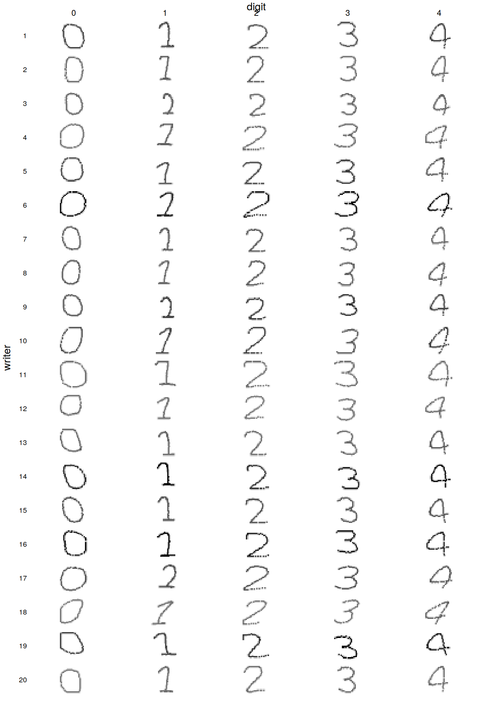
University of Cape Town
Department of Statistical Sciences
STA5073Z: Data Science for Industry · Assignment 2
Who wrote this digit? Writer identification with CNNs and Siamese networks
23 October 2026
1 Introduction
Handwriting contains characteristics that can distinguish one writer from another, even when different people write the same digit. However, recognising these differences becomes more difficult when handwriting changes across sessions or when different digits are compared. This report investigates two related tasks: identifying which of 20 known writers produced a handwritten digit, and determining whether two digit images were produced by the same writer.
The dataset contains 25,000 simulated greyscale images from 20 writers, covering digits 0–4 across five sessions. Exploratory analysis is used to examine how handwriting varies by writer, digit and session. To assess generalisation, models are trained on sessions 1–3, validated on session 4 and tested on session 5, rather than randomly splitting individual images. A separate writer-held-out experiment tests whether same-writer matching can extend to previously unseen writers.
Two neural network approaches are evaluated. A convolutional neural network (CNN) predicts writer identity as a 20-class classification problem, while a Siamese network learns an embedding space in which images from the same writer should be closer together than those from different writers. We compare their performance, investigate hyperparameter sensitivity, and examine how digit identity and session variation affect the results. The aim is to assess not only how accurately each model performs, but also which approach is better suited to identification or verification and where its limitations lie.
2 Data and exploration
The data is 25,000 simulated images: 20 writers × 5 digits × 5 sessions × 50 replicates, each a 28 × 28 greyscale digit. Figure 1 lines up one writer per row and one digit per column: digit shape dominates what the eye sees, but within a row each writer keeps a visibly consistent stroke width and slant across all five digits – the thing we are hoping a model can key on. Figure 2 follows one writer’s digit across the five sessions: the stroke becomes visibly heavier and more angular from session 1 to session 5, a gradual drift rather than a jump, and the same drift direction holds for every replicate shown within a session. Replicates within one session, by contrast, look close to identical – the main source of within-session variation is small pixel-level noise, not a different way of writing the digit.
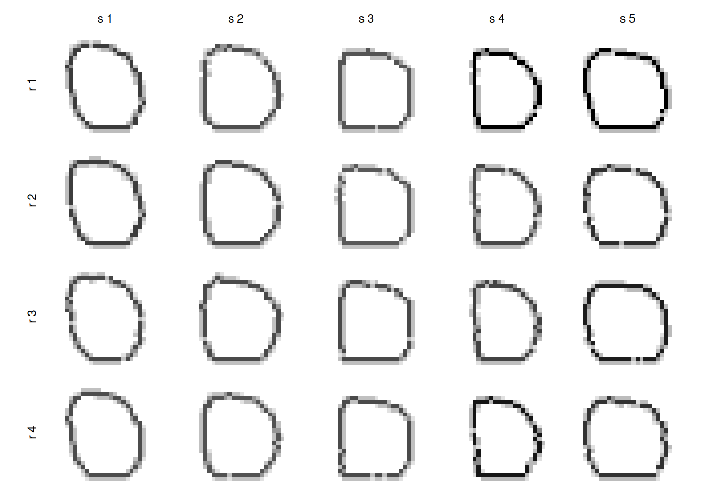
The session drift in Figure 2 is a whole-writer effect, not specific to one digit or replicate. Figure 3 makes the same point a different way: the top row is each writer’s own average digit-0 image (writers are visibly distinct once you average out replicate noise), and the bottom block subtracts each of four writers’ own overall mean from their session means. The resulting blue/red difference images drift in a consistent direction session by session for a given writer, but that direction differs from writer to writer – session is a shared kind of variation (everyone’s stroke changes a little over time) but not a shared direction, which is why a model trained on sessions 1-3 still has to generalise to session 5 rather than just learning “session 5 looks like X”.
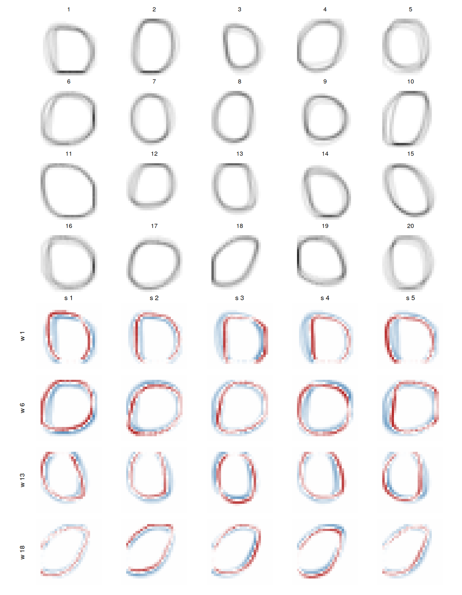
Eyeballing images only goes so far, so Figure 4 boxplots five simple numeric features (ink amount, bounding-box width and height, how far the centre of mass sits from the image centre, and a slant estimate) against writer, session and digit in turn. Ink, width, height and slant all separate clearly by writer – each writer occupies a fairly narrow, writer-specific band on these features – while none of the five show a visible shift by session, at least at this coarse, whole-distribution level (the session drift in Figure 2 and Figure 3 is real but evidently too subtle to show up as a shift in these five summary numbers; a model looking at raw pixels can still pick it up). Digit mostly moves ink, width and height, which is just digit shape (a 1 uses less ink than a 0), not writer style.
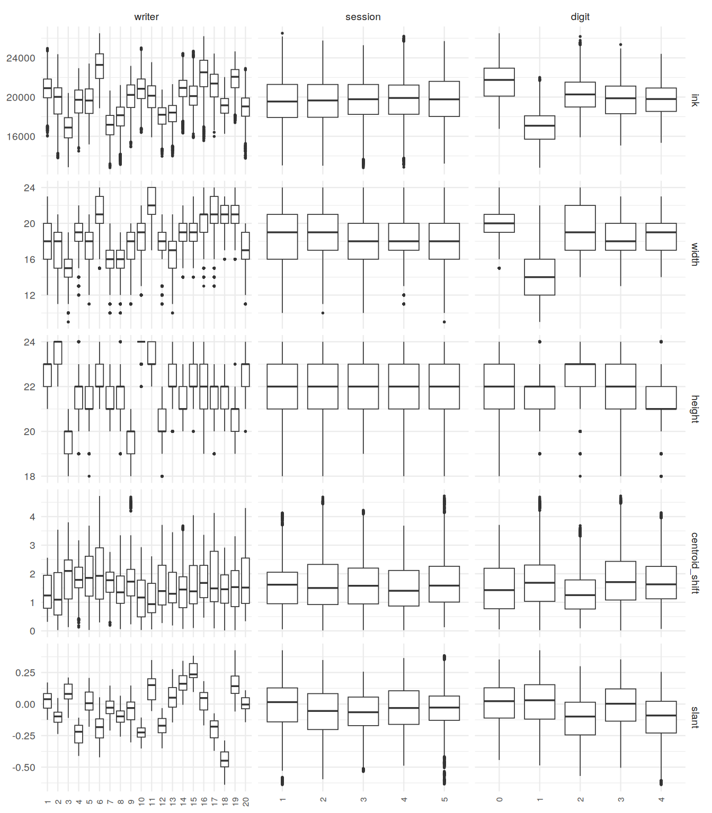
| Feature | Between writer % | Between session % | Within session % |
|---|---|---|---|
| ink | 79.1 | 7.6 | 13.2 |
| width | 71.7 | 12.8 | 15.5 |
| height | 68.1 | 3.3 | 28.7 |
| centroid_shift | 8.5 | 13.8 | 77.7 |
| slant | 87.9 | 10.0 | 2.1 |
Table 1 puts a number on that impression with a variance decomposition (each feature is first centred on its own digit mean, so digit shape doesn’t swamp the writer/session split). Slant is the most writer-specific feature, at 87.9% of its variance sitting between writers and only 2.1% left as within-session noise; ink and width are similar, with 79.1% and 71.7% between writers respectively. Centroid shift is the exception: only 8.5% of its variance is between writers, with most of the remainder (77.7%) within a single session and the rest (13.8%) between sessions – these images are already centred during generation, so where the centre of mass lands is mostly replicate noise rather than a writer trait. Across every feature, the between-session share stays small (at most 13.8%), confirming that the session effect visible in Figure 2 is real but subtle next to the writer effect – good news for a model trying to recognise a writer on a new day.
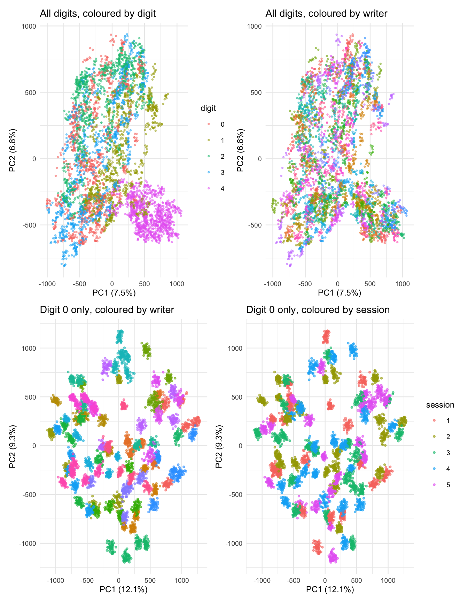
Figure 5 shows what the writer signal costs you when digit isn’t held fixed. With all five digits mixed together (top row), the first two principal components explain only 7.5% and 6.8% of pixel variance and visibly separate by digit, not writer – digit shape is simply the biggest source of pixel-level variation, and it swamps the writer signal in a plain PCA. Restricting to digit 0 only (bottom row) removes that confound: PC1 and PC2 now explain more variance (12.1% and 9.3%) and writers form tight, clearly separated clusters, which are not further split by session – so once digit is held fixed, writer style is a strong linear signal even in raw pixels, and the CNN and Siamese network (which both condition on a single digit at a time) should have an easier time than this unconditional PCA suggests.
This is simulated data, and that matters for how far these conclusions travel. The images are clean, centred and noise-free in a way real handwriting scans rarely are; there are only 20 writers and 5 digits (0-4, not the full 0-9), each perfectly balanced with 50 replicates per writer/digit/session; and “session” here is a single simulated drift process rather than genuinely different pens, moods or paper found in real handwriting collected over time. The patterns above – a dominant, stable writer signal and a small, gradual session effect – are the patterns this particular simulator was built to produce, so they should be read as “this method can find writer-specific signal when it is there and well-behaved,” not as evidence of how well it would do on messier, real handwriting.
3 Evaluation design
Both models share one main split, split_main, built by session rather than by image: sessions 1-3 are train, session 4 is validation, and session 5 is held out entirely for test (Table 2). Splitting by session rather than randomly means every test image comes from a session the model never trained on, for a writer it has seen – the evaluation this represents is “can you recognise a known writer’s handwriting on a new day”, which is the realistic use case (a person enrols once, then is checked against later samples) and the harder, more honest version of the writer-identification question. The CNN uses only split_main: it is a fixed 20-class classifier, so there’s no meaningful way to test it on a writer it never trained on – the output layer itself only has units for the 20 training writers. The Siamese network additionally uses split_writer, which instead holds out whole writers (14 train / 3 val / 3 test), because its job – deciding whether two images match – doesn’t require having seen either writer during training; this split tests the harder, more general question of whether the learned notion of “same writer” transfers to people the model has never encountered.
| strategy | test | train | val |
|---|---|---|---|
| split_main (session-based) | 5000 | 15000 | 5000 |
| split_writer (writer-based) | 3750 | 17500 | 3750 |
Validation (session 4) is where every tunable choice gets made: early stopping for both models, the hyperparameter search in Section 6, and the Siamese network’s same/different distance threshold. Test (session 5) is touched exactly once, after all of that is fixed, so the reported test numbers are an honest estimate of performance on genuinely new data rather than a number that has itself been optimised.
Splitting by session guards against one obvious leak – near-duplicate replicates of the same writer, digit and session landing on both sides of the split – but it’s worth asking how much that guard is actually worth. Table 3 runs a simple baseline (a k-nearest-neighbour classifier on five basic image features: ink, width, height, centroid shift and slant) twice: once on a random image split of the same size, which lets replicates leak freely across train and test, and once on the proper session-held-out split.
| Split | Description | Train n | Test n | Accuracy |
|---|---|---|---|---|
| Random | Random image split (ignores session; replicate leakage possible) | 15000 | 5000 | 93.0% |
| Session | Session-held-out split (sessions 1-3 train, session 5 test) | 15000 | 5000 | 45.9% |
The gap is large: the same baseline reaches 93.0% accuracy on the random split but only 45.9% on the session split – a 47.1% drop from nothing but the split strategy, with the model, features and train/test sizes held fixed. That gap is the optimism a random split would have bought this baseline: with random assignment, a near-identical replicate of the test writer’s handwriting (same writer, same digit, often the same session) is likely sitting in the training set, so the “test” accuracy mostly measures memorisation of a very similar example rather than generalisation to new handwriting.
Three leakage risks matter for both models even with the session split in place. First, test pairs and splits must be built in the right order: data/test_pairs.csv is built from data/splits.csv (Section 3, R/00_data.R), not the reverse, so no pair can straddle train and test. Second, the Siamese threshold is chosen on validation pairs only (Section 5) and never touched again once test pairs are scored, so it can’t be quietly fitted to the test set. Third, the same image never appears in more than one pair-role that would let information leak between train and test pairs, since pairs are drawn after the split and only from the appropriate session(s). Even so, results may still read as somewhat optimistic: with only 20 writers the models are solving a much easier closed-set problem than real-world identification among thousands of candidates, and the data is simulated, so the writer and session effects are exactly the effects the simulator was built to produce (Section 2) – a real-world, cross-scanner, cross-pen deployment would likely see a larger session-style gap than the one measured here.
4 Writer identification with a CNN
Two convolutional neural networks (CNNs), with two and three layers, were built to predict writer identity. Table 4 summarises their architectures and parameter counts. The three-layer model adds a 2 × 2 max-pooling layer and a convolutional layer with 64 filters. Both models use a 20-unit softmax output to estimate probabilities for the 20 writers. The three-layer CNN also serves as the Siamese network’s shared backbone.
| Layer | Output shape | Parameters | In 2-layer model |
|---|---|---|---|
| Input: one 28 × 28 image | 28 × 28 × 1 | 0 | yes |
| Convolution, 16 filters 3 × 3, ReLU | 26 × 26 × 16 | 160 | yes |
| Max pooling 2 × 2 | 13 × 13 × 16 | 0 | yes |
| Convolution, 32 filters 3 × 3, ReLU | 11 × 11 × 32 | 4 640 | yes |
| Max pooling 2 × 2 | 5 × 5 × 32 | 0 | no |
| Convolution, 64 filters 3 × 3, ReLU | 3 × 3 × 64 | 18 496 | no |
| Global average pooling | 64 (2-layer: 32) | 0 | yes |
| Dense embedding, 32 units, ReLU | 32 | 2 080 (2-layer: 1 056) | yes |
| Dropout 0.3 (training only) | 32 | 0 | yes |
| Dense, 20 units, softmax | 20 | 660 | yes |
Both CNNs were trained on sessions 1–3 and validated on session 4. The grey dashed lines in Figure 6 mark the epochs with the best validation accuracy; orange and blue lines show training and validation, respectively. The three-layer model reaches 92% training accuracy at epoch 13, suggesting it memorises the training sessions, while validation accuracy remains near 59.5%. Its validation loss is lowest at epoch 3, then rises to 2.51 by epoch 13, indicating overfitting and overconfidence. The two-layer model appears to underfit: training accuracy reaches 60% only at epoch 60, while validation accuracy rises steadily. Its validation loss follows a similar but slower pattern, reaching a minimum of 1.69 at epoch 45 before increasing to 1.82 at the selected epoch, 60.
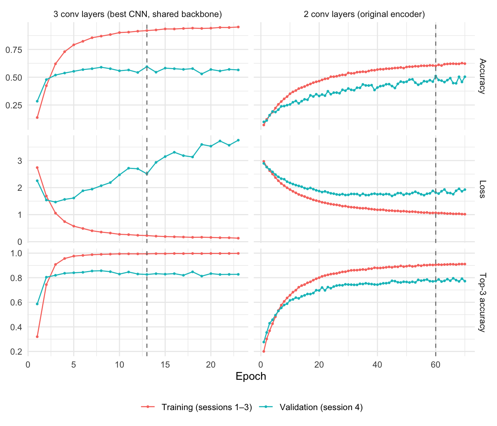
Test accuracy is the proportion of images for which the highest-probability writer is correct; top-3 accuracy is the proportion for which the true writer appears among the three highest-probability predictions. The latter measures whether the model provides a useful shortlist. Random guessing yields 5% accuracy and 15% top-3 accuracy. In Table 5, the three-layer model achieves 56.6% test accuracy and 84.8% top-3 accuracy, exceeding the two-layer model’s 48.5% and 79.5%. Test accuracy is 2–3 percentage points below validation accuracy for both models. Despite its higher accuracy, the three-layer model has a higher test loss (2.22), because cross-entropy penalises its overconfident incorrect predictions.
| Model | Test accuracy (95% CI) | Top-3 accuracy | Macro-F1 | Test loss | Validation accuracy |
|---|---|---|---|---|---|
| 3 conv layers (best CNN, shared backbone) | 56.6% (55.2%–58.0%) | 84.8% | 0.545 | 2.22 | 59.5% |
| 2 conv layers (original encoder) | 48.5% (47.1%–49.9%) | 79.5% | 0.465 | 1.72 | 51.0% |
Figure 7 compares accuracy by digit, with 1 000 test images per digit and an approximate 95% interval of +/-3 percentage points. Digit 2 is the weakest for both models, suggesting it carries the least writer-identifying information in session 5 test data. Digit 0 is the three-layer model’s strongest digit (63.3%) but the two-layer model’s weakest (39.7%). Conversely, digit 4 is the two-layer model’s strongest (60.8%), while the three-layer model achieves 56.6%. Thus, which digit appears most informative depends partly on the model.
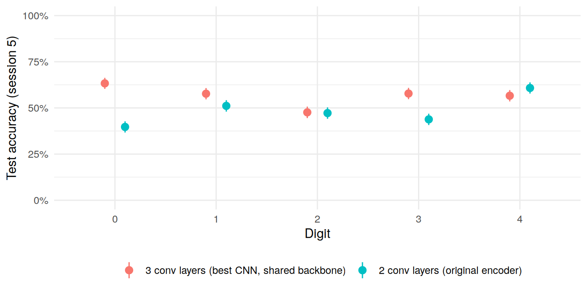
Figure 8 compares predictions by writer; each writer contributes 250 test images. Darker diagonal cells indicate more correct predictions. Writers 9 and 18 are identified with 100% accuracy, while writers 6, 11, 12, 14, 17 and 19 achieve 76–84%. However, writers 9, 14 and 6 are predicted 443, 392 and 378 times, respectively, well above the expected 250. Writer 10 has 27% accuracy but 99.6% top-3 accuracy: it is often confused with writer 2, to which the model assigns 179 of writer 10’s test images to writer 2. Writer 15 is also confused with writer 14; writers 8 and 13 are confused with each other and writer 5. Writer 5 has 0% accuracy and is instead classified as writers 15, 13, 19 or 14. One possible explanation is that writer 5’s handwriting has shifted across sessions.
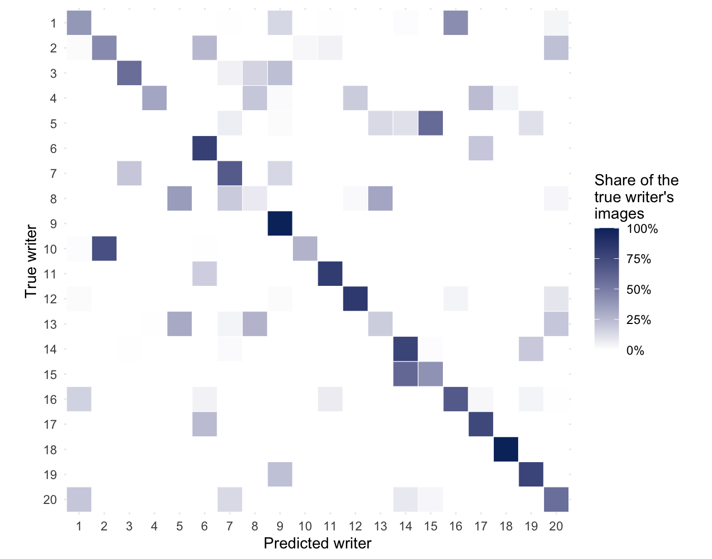
Figure 9 shows that writer-level test accuracy ranges from 0% for writer 5 to 100% for writers 9 and 18. The gap between test and top-3 accuracy distinguishes near misses, where the true writer ranks second or third, from far misses, where the true writer is absent from the top three. Writer 10’s confusion with writer 2 illustrates a near miss; writer 5, with only 4% top-3 accuracy, represents an extreme far-miss case. Overconfidence also contributes: for 35% of the three-layer model’s incorrect predictions, the true writer receives less than 1% probability. Overall, the 56.6% test accuracy conceals substantial variation in performance across writers. These differences show why aggregate accuracy alone does not fully describe model performance.
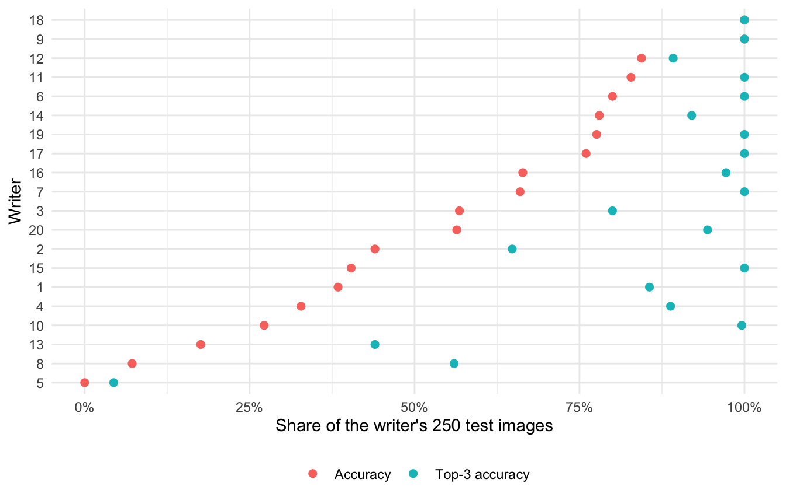
5 Same-writer matching with a Siamese network
A Siamese network was built to decide whether two handwritten digit images came from the same writer, rather than identifying one of the 20 known writers as the CNN does. This makes it suitable for verifying handwriting from writers not seen during training.
The network uses two branches with shared weights, each processing a 28 × 28 greyscale image through the three-layer CNN encoder described in Section 4. The encoder has convolutional layers with 16, 32 and 64 filters, pooling layers and a dense layer producing a 32-dimensional embedding. Euclidean distance measures the similarity between the two embeddings: smaller distances suggest the same writer, while larger distances suggest different writers.
Training required pairs of images labelled as either positive (same writer) or negative (different writers), as illustrated in Figure 10. We generated 12,000 training pairs and 3,000 validation pairs, with equal numbers of positive and negative pairs. Both images in each pair represented the same digit, so the network could not distinguish writers simply by recognising different digit shapes. Positive pairs were preferably drawn from different sessions to encourage the model to learn writer characteristics that remain consistent over time. Self-pairs were excluded, and pairs were constructed only after splitting the data to avoid leakage between training and evaluation.
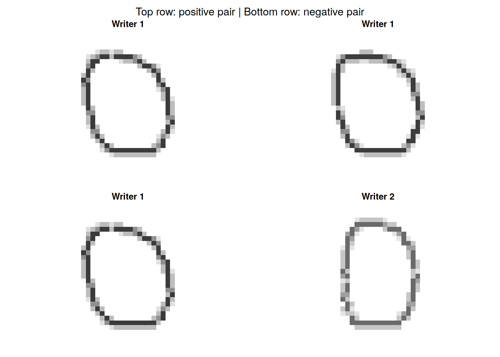
The network was trained using contrastive loss, which pulls same-writer embeddings closer together and pushes different-writer embeddings apart. Positive pairs are penalised for large distances, while negative pairs are penalised when their distance falls below a margin of 1. Training used Adam with a learning rate of 0.001 and early stopping based on validation loss.
To classify a pair as a match or non-match, a distance threshold was selected on validation pairs to maximise balanced accuracy, giving equal weight to correctly accepting genuine pairs and rejecting different-writer pairs. Performance was then measured using ROC AUC, balanced accuracy and equal error rate (EER). ROC AUC measures how well genuine and different-writer pairs can be distinguished across thresholds, while EER is the point where false-acceptance and false-rejection rates are approximately equal.
The final tuned model achieved a test ROC AUC of 0.851, balanced accuracy of 74.6% and approximate EER of 23.7%, using a validation-selected threshold of 0.391. Figure 11 shows that genuine pairs generally have smaller embedding distances than different-writer pairs, although the distributions overlap.
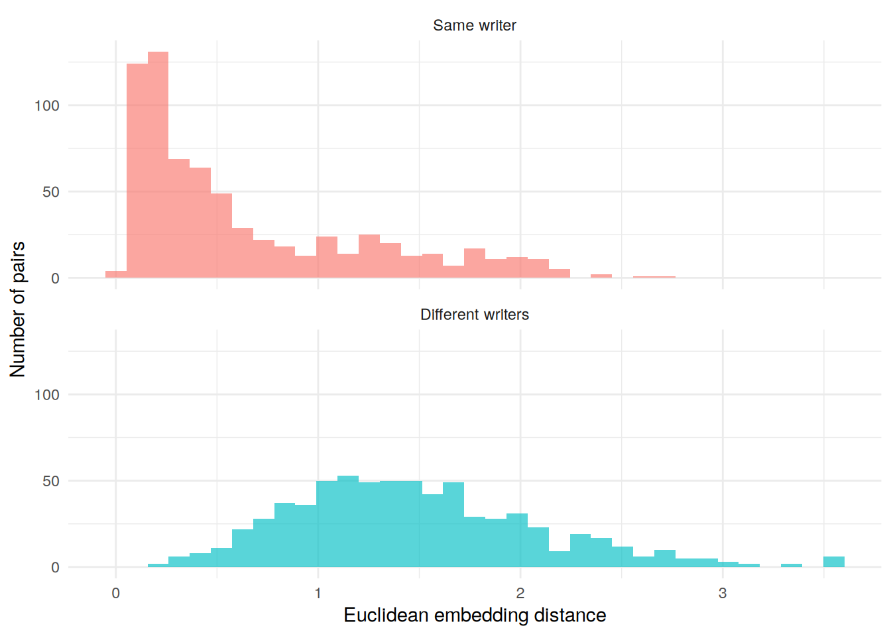
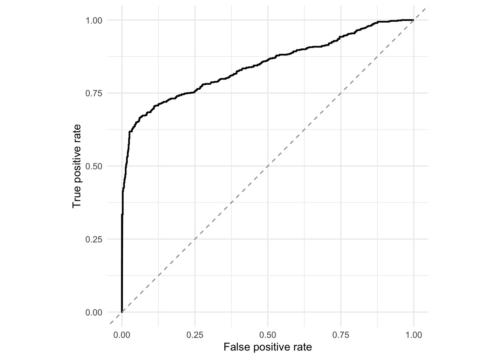
Figure 12 shows that the model distinguishes writers better than chance, but errors remain. A false acceptance incorrectly matches two different writers, while a false rejection fails to recognise two samples from the same writer.
An additional experiment tested whether the learned similarity measure transfers to writers excluded entirely from training. Unlike the main session-based split, this experiment used 14 training writers, three validation writers and three test writers. A separate model was trained from scratch, with its threshold selected using validation writers before evaluating the unseen test writers.
The unseen-writer model achieved an AUC of 0.893, balanced accuracy of 77.8% and EER of 18.6%, suggesting that the network learned features that transfer to new identities. However, these results should not be interpreted as an improvement over the main experiment. The unseen-writer evaluation used same-digit pairs, while the main test set also included cross-digit pairs, making the two evaluations different in difficulty.
| Evaluation | ROC AUC | EER | Balanced accuracy |
|---|---|---|---|
| Known writers, new session | 0.851 | 23.7% | 74.6% |
| Unseen writers | 0.893 | 18.6% | 77.8% |
6 Hyperparameter sensitivity
6.1 CNN
The CNN hyperparameter search varied dropout (0, 0.3, 0.5), depth (one to three convolutional layers) and learning rate (0.0003, 0.001, 0.003), one setting at a time. Interactions were not tested; runs used three seeds, one validation session, loss-based stopping (patience 5) and a 50-epoch cap. In Figure 13, three layers with dropout 0.3 and learning rate 0.001 performed best, averaging 49.9% validation accuracy. Depth had the clearest effect. Dropout results (45%, 42%, 43%) were within seed variation, while learning rate 0.003 was less stable (spread 0.052 versus about 0.025). These findings should be interpreted cautiously given the limited search design.
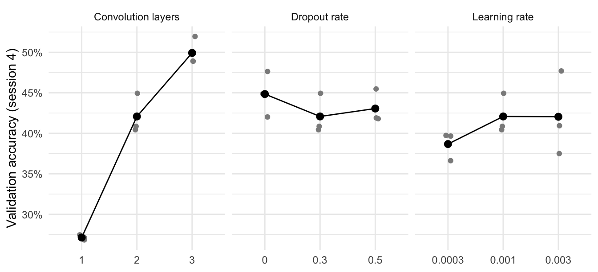
The one-layer model and learning rate 0.0003 reached the 50-epoch cap while improving, so Figure 13 may underestimate their performance. Later runs used validation accuracy for stopping. In Figure 13, loss-based stopping selected epoch 3 for the three-layer model, stopping at epoch 8 and restoring those weights. Overconfidence increased validation loss while accuracy still improved, disadvantaging the deeper model. It nevertheless outperformed the two-layer model; Table 8 compares stopping rules.
| Hyperparameter | Values | Mean accuracy per value | Range of means | Range / seed noise |
|---|---|---|---|---|
| Convolution layers | 1, 2, 3 | 27.1%, 42.1%, 49.9% | 22.8% | 8.4 |
| Dropout rate | 0, 0.3, 0.5 | 44.8%, 42.1%, 43.1% | 2.8% | 1.0 |
| Learning rate | 0.0003, 0.001, 0.003 | 38.7%, 42.1%, 42.0% | 3.4% | 1.3 |
The three-layer model performs better under both rules in Table 8, but the advantage depends on stopping. Loss-based stopping (patience 5, maximum 50 epochs) gave a 7.8-point advantage; accuracy-based stopping (patience 10, maximum 150) increased it to 11.1 points. Accuracy-based stopping avoids penalties from rising cross-entropy, while short patience can stop slow learners prematurely.
| Stopping rule | 2 layers | 3 layers | Mean epochs (2 / 3) | 3-layer gain | Gain / SE |
|---|---|---|---|---|---|
| Validation loss, patience 5, max 50 epochs | 42.1% ± 2.5% | 49.9% ± 1.8% | 36 / 8 | 7.8% | 4.5 |
| Validation accuracy, patience 5, max 50 epochs | 35.3% ± 13.2% | 58.7% ± 1.1% | 27 / 16 | 23.4% | 3.1 |
| Validation accuracy, patience 10, max 50 epochs | 46.9% ± 2.6% | 59.6% ± 0.5% | 50 / 25 | 12.8% | 8.3 |
| Validation accuracy, patience 10, max 150 epochs | 48.5% ± 3.3% | 59.6% ± 0.5% | 58 / 25 | 11.1% | 5.7 |
Because the three-layer model overfits, regularisation was tested. In Table 9, dropout 0.5 changed validation accuracy by only 0.1 points (about 0.1 standard errors, likely noise), but reduced the training-validation gap from 30.7 to 11.9 points and cross-entropy from 2.36 to 2.04. The smaller gap partly reflects Keras measuring training accuracy with dropout active; lower cross-entropy also suggests less overconfidence. Validation accuracy remained near 59.6%. L2 left accuracy and the gap largely unchanged but worsened cross-entropy to 2.45; combined with dropout 0.5, accuracy fell to 58.4%. The selected model therefore remains three layers, dropout 0.3 and no L2.
| Setting | Validation accuracy | Change vs current | Validation cross-entropy | Training accuracy | Training − validation | Mean epochs |
|---|---|---|---|---|---|---|
| dropout 0.3, no L2 (current) | 59.6% ± 0.5% | – | 2.36 | 90.3% | 30.7 points | 25 |
| dropout 0.5, no L2 | 59.8% ± 2.5% | +0.1 points (0.1 SE) | 2.04 | 71.7% | 11.9 points | 23 |
| dropout 0.3, L2 1e-4 | 59.2% ± 1.7% | -0.5 points (-0.5 SE) | 2.45 | 91.4% | 32.3 points | 28 |
| dropout 0.5, L2 1e-4 | 58.4% ± 0.4% | -1.2 points (-3.4 SE) | 2.30 | 80.7% | 22.3 points | 31 |
6.2 Siamese network
A limited hyperparameter search tested how sensitive the Siamese network was to learning rate (0.0005, 0.001 and 0.002), contrastive margin (0.5, 1 and 1.5) and embedding dimension (16, 32 and 64). These control how quickly the network learns, how far apart different-writer embeddings are encouraged to be, and how much information the embedding can represent. Nine configurations were evaluated using two seeds each. Seven configurations formed the one-factor-at-a-time comparisons shown in Figure 14, with two additional configurations also tested.
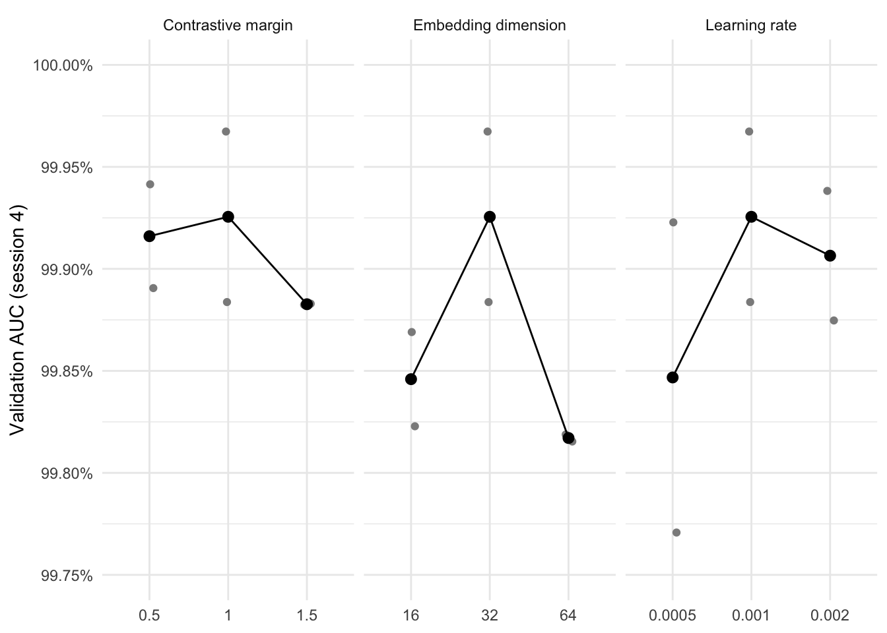
| Hyperparameter | Values | Mean AUC (%) | Range (pp) | Range / SD |
|---|---|---|---|---|
| Contrastive margin | 0.5, 1, 1.5 | 99.916, 99.926, 99.883 | 0.043 | 0.63 |
| Embedding dimension | 16, 32, 64 | 99.846, 99.926, 99.817 | 0.108 | 1.61 |
| Learning rate | 0.0005, 0.001, 0.002 | 99.847, 99.926, 99.906 | 0.079 | 1.17 |
The highest mean validation AUC among the one-factor comparisons came from the baseline settings: learning rate 0.001, margin 1 and embedding dimension 32. Validation AUC remained above 99.8% on average across the tested values, so the overall differences were small. Embedding dimension had the largest effect, with a range of approximately 0.108 percentage points between mean AUCs, while margin and learning rate varied by approximately 0.043 and 0.079 points respectively. Figure 14 also shows that some differences between settings were comparable to the variation between seeds, so the results do not establish that the chosen configuration is globally optimal.
The selected model achieved a validation AUC of 0.9997, but test performance fell to 0.8512 AUC, 74.57% balanced accuracy and 23.71% EER. The difference is partly explained by pair composition. Same-digit test pairs achieved 0.980 AUC and 84.4% balanced accuracy, compared with 0.695 AUC and 50.0% balanced accuracy for cross-digit pairs. At the validation-selected threshold, all 400 cross-digit pairs were classified as different-writer pairs, including 200 genuine matches.
This is consistent with the network having been trained only on same-digit pairs. It learned to compare handwriting styles when digit shape was held fixed, but transferred less effectively when the two images represented different digits. Including cross-digit positive pairs during training would be a useful extension to test whether this limitation can be reduced.
7 CNN vs Siamese network: digits and sessions
7.1 CNN results by digit and session
To assess session effects, the three-layer CNN was trained on three sessions, stopped on a fourth and tested on the remaining session as a “new day.” Each session served in turn as the test set. Grey points in Figure 15 show results across three seeds.
Accuracy ranged from 53.3% on session 4 to 69.5% on session 2, averaging 60.5%. This range was 7.6 times seed variation, indicating a strong session effect. The main test session, session 5, averaged 59.2% and was typical. Session 4 remained hardest despite being used for tuning, suggesting it was more difficult for the model.
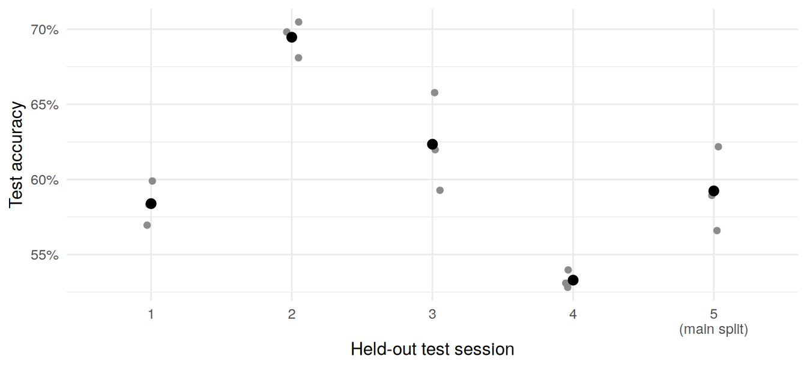
Table 11 compares accuracy for each digit (1 000 test images) with each session’s overall accuracy. The best digit changes by session. Across all five sessions, accuracy ranges from 58% for digit 3 to 63% for digit 0, suggesting digit 0 carries more writer information on average. Yet digit 2 is best in sessions 2 and 4 and worst in session 5. Digit rankings therefore do not generalise reliably. The all-digits row repeats the session pattern in Figure 15.
| Digit | Session 1 | Session 2 | Session 3 | Session 4 | Session 5 | Mean |
|---|---|---|---|---|---|---|
| 0 | 65.3 | 71.8 | 60.9 | 52.1 | 64.2 | 62.9 |
| 1 | 54.5 | 72.8 | 47.0 | 58.2 | 60.4 | 58.6 |
| 2 | 62.5 | 73.5 | 66.7 | 60.5 | 48.5 | 62.3 |
| 3 | 53.1 | 68.3 | 62.6 | 48.3 | 57.5 | 58.0 |
| 4 | 56.6 | 60.9 | 74.6 | 47.3 | 65.6 | 61.0 |
| All digits | 58.4 | 69.5 | 62.3 | 53.3 | 59.2 | 60.5 |
In Figure 16, models predict the same session-5 test images (1 000 per digit): one is trained on all digits (15 000 images), the other on one digit only (3 000 images). Blue points show standalone information: digit 4 reaches 67% accuracy, digit 0 47%, and digits 1–3 about 53–54%. The gap from the all-digit model measures transfer from other digits. This is largest for digit 0 (+17 points), whose shape alone appears less distinctive; small gaps for digits 1–4 suggest their images often suffice. This partly agrees with Figure 7: on session 5, the all-digit model performs best on digit 0 and worst on digit 2.
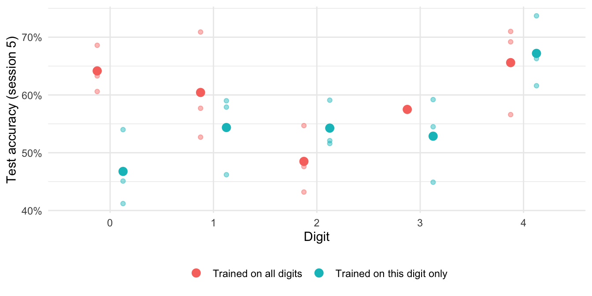
7.2 Siamese results by digit and session
The Siamese network was also evaluated by digit and session to examine which conditions made writer matching easier or harder.
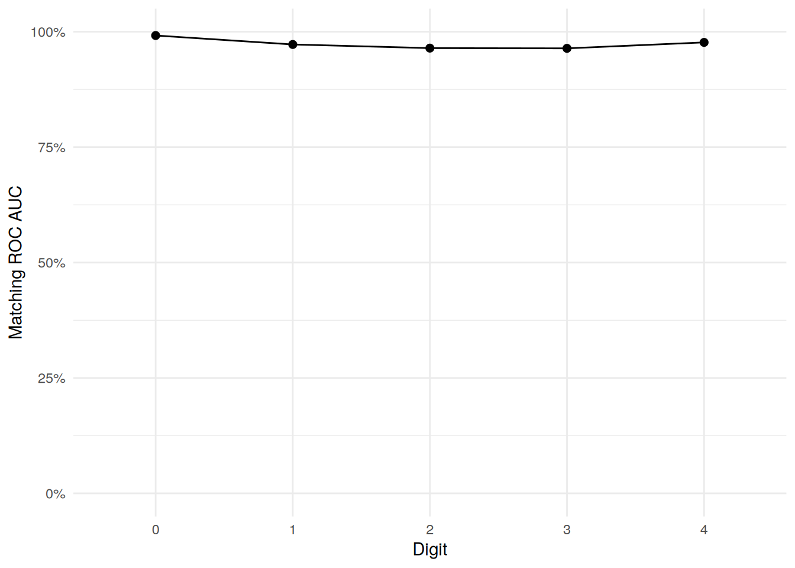
Figure 17 shows that the Siamese network performed consistently well when both images represented the same digit. Across digits 0–4, ROC AUC ranged from 0.9971 for digit 3 to 0.9997 for digit 1, while balanced accuracy ranged from 98.3% to 99.3%. Digits 0 and 1 performed slightly better than digits 2–4, but the differences were small. This suggests that writer-specific characteristics were identifiable across all five digits when the digit was held fixed.
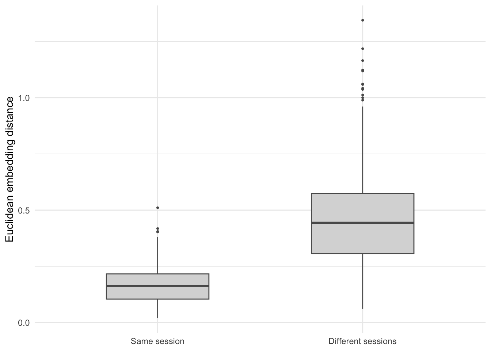
Session differences had a clearer effect. Figure 18 shows that genuine pairs from the same session had a mean embedding distance of 0.166, compared with 0.536 for pairs from different sessions. The same writer’s handwriting was therefore more than three times as far apart in embedding space when the images came from different sessions.
The Siamese network achieved an AUC of 0.9985 and balanced accuracy of 98.92% on same-session comparisons, compared with 0.9196 AUC and 64.85% balanced accuracy across sessions. Sensitivity fell from 99.10% to 31.35% at the fixed threshold. This means that although the network could still distinguish genuine from different-writer pairs reasonably well across thresholds, it frequently rejected genuine matches when the writer’s handwriting changed between sessions.
| Pair type | Number of pairs | ROC AUC |
|---|---|---|
| Same-digit | 1000 | 0.975 |
| Cross-digit | 400 | 0.688 |
| All pairs | 1400 | 0.844 |
The Siamese network shows a similar limitation when comparing different digits (Table 12): same-digit AUC (0.975) is far higher than cross-digit AUC (0.688). All 400 cross-digit pairs were rejected at the chosen threshold, including 200 genuine matches. Together, these results show that the Siamese network learns useful writer-specific information, but matching becomes less reliable when handwriting changes across sessions or digit identities. Training on a wider variety of genuine pairs may help improve robustness.
7.3 Side by side
Section 4 and Section 5 each score their model the way it was trained for: the CNN as a 20-way classifier, the Siamese network as a same/different matcher. To compare them directly, R/eval_embeddings.R scores all three embedding spaces – a PCA baseline (the top 32 principal components of pixels, fitted on a training-session sample, giving the CNN and Siamese embeddings a non-learned reference point), the CNN’s 32-unit embedding layer, and the Siamese encoder’s 32-unit embedding – on the exact same data/test_pairs.csv pairs and the exact same nearest-centroid identification task (classify a session-5 test image to whichever training writer’s embedding centroid it’s closest to).
| Model | ROC AUC | Equal error rate | Nearest-centroid accuracy |
|---|---|---|---|
| PCA baseline | 0.767 | 30.4% | 38.9% |
| CNN embedding | 0.943 | 13.3% | 58.1% |
| Siamese embedding | 0.844 | 24.7% | 24.0% |
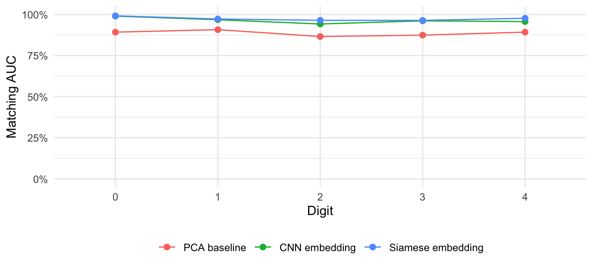
On overall matching, the ranking in Table 13 is CNN > Siamese > PCA: the CNN embedding reaches 0.943 AUC against the Siamese network’s 0.844 and the PCA baseline’s 0.767, with equal error rate telling the same story in reverse. That’s a little surprising given the Siamese network is the one directly trained to minimise exactly this kind of pairwise distance – the gap is explained by data/test_pairs.csv including cross-digit pairs, which the Siamese network never saw in training (it was trained on same-digit pairs only, Section 5) and matches much worse on; restricted to same-digit pairs, Figure 19 shows the Siamese network is competitive with or ahead of the CNN on most digits. Nearest-centroid identification tells a different story again: the CNN embedding reaches 58.1% accuracy, clearly ahead of the PCA baseline’s 38.9%, while the Siamese embedding trails both at 24.0% – well above the 5% chance rate, but evidently the Siamese network’s contrastive training pulls same-writer pairs together locally without necessarily arranging all 20 writers into compact, well-separated global clusters the way a 20-class softmax classifier is directly pushed to.
That split points to which model suits which question. If the task is “which of these 20 known writers wrote this”, the CNN is the right tool and the cheaper one to run at inference (one forward pass, one softmax); if it ever needs to cover a 21st writer, though, it needs retraining from scratch, because the output layer itself is sized to 20 classes. If the task is “did the same person write these two samples” – including for someone never seen in training – the Siamese network is the right tool, exactly because it was designed and evaluated for that (Section 5’s unseen-writer experiment); its cost is a less interpretable per-writer signal, as the centroid result above shows.
The digit rankings mostly agree across methods: digit 0 is at or near the best-matching digit for both the CNN and the Siamese network in Figure 19, broadly consistent with the EDA’s digit-0-restricted PCA (Figure 5) showing clean writer clusters for that digit. The session gap – how much farther apart same-writer pairs sit when they come from different sessions rather than the same one – is present for every model: cross-session distances exceed same-session distances by a factor of 5.9x for the PCA baseline, 3.6x for the CNN, and 2.8x for the Siamese network, confirming that the session drift documented in Section 2 costs every model some matching accuracy, not just the simplest one.
As with Section 2, these numbers should be read with the data’s limits in mind: 20 simulated writers is a small, closed, easy world next to real-world identification, and all three embedding spaces are evaluated on one simulated test session (session 5) – a real deployment spanning many more sessions, writers and genuinely different pens and paper would likely show a larger gap between methods, and a larger session effect, than measured here.
8 Conclusion
The results show that writer-specific information can be learned from handwritten digits, but performance depends strongly on the evaluation design and the type of comparison being made. Exploratory analysis found clear differences between writers, while session changes introduced additional variation. This was reflected in the baseline results: a simple classifier achieved 93.0% accuracy under a random image split but only 45.9% when an entire session was held out. Random splitting therefore gives an overly optimistic impression of how well a model recognises handwriting from a new session.
For writer identification, the three-layer CNN performed better than the two-layer model, achieving 56.6% test accuracy and 84.8% top-three accuracy. Increasing model depth improved performance, although the three-layer model also showed overfitting and overconfidence. Accuracy varied considerably between writers and sessions, meaning that the overall result hides cases where the model performs well and others where it struggles to identify the correct writer.
The Siamese network achieved a test ROC AUC of 0.851 and balanced accuracy of 74.6% for same-writer verification. It also achieved 0.893 AUC in the separate unseen-writer experiment, suggesting that the learned similarity measure can transfer to new identities. However, matching became less reliable across sessions and particularly when the two images represented different digits. In the direct embedding comparison, the CNN achieved the highest matching AUC of 0.943, compared with 0.844 for the Siamese network and 0.767 for PCA. The CNN is therefore more effective for identifying known writers in this study, while the Siamese approach offers a way to verify writers without requiring them to be included in the original classification model.
These findings are limited by the use of clean, simulated handwriting from only 20 writers and five digits. Future work could evaluate both models on real handwriting collected across more sessions and writing conditions, while including cross-digit pairs during Siamese training to improve generalisation. Overall, the study shows that both approaches can capture writer-specific characteristics, but their usefulness depends on the task and how well they handle changes in handwriting.
9 Plagiarism declaration
We, Maxine Senderayi (SNDMAX001), Jesse MacDonald (MCDJES006) and Nicole Thomas (THMNIC036), declare that:
- We know that plagiarism is wrong. Plagiarism is to use another’s work and pretend that it is one’s own.
- Each contribution to, and quotation in, this report from the work of other people has been attributed, and has been cited and referenced.
- This report is our own work. Our use of AI tools is described in the AI use statement below.
- We have not allowed, and will not allow, anyone to copy our work with the intention of passing it off as their own work.
10 AI use statement
For each of the nine tasks in the brief, we record: the tool used, what it was used for, how its output was checked, and roughly how much of what it produced was used as-is versus rewritten. A full, dated log of every individual interaction is kept in AI_USE_LOG.md in the project repository; this table summarises it per task.
| Task | Member | (a) Tool | (b) Used for | (c) How checked | (d) How much used |
|---|---|---|---|---|---|
| 1 Data exploration | Jesse | Claude Code | Drafting the write-up discussing the EDA figures/table | Re-ran the EDA code myself and checked every cited number against it; rewrote into my own words | Edited, some |
| 2 CNN | Maxine | Claude | CNN code: get_split() and build_cnn() in R/cnn_functions.R, with explanations of one-hot labels, pixel scaling and the layer sizes; explanations to help me interpret results (top-3 accuracy, overfitting vs choosing on validation); review of my draft text (fact-check against the results, word counts) |
Ran the code in RStudio and checked the image dimensions and the 750 training images per writer; checked the numbers against the output files; I corrected the facts and rewrote the flagged passages myself | Code: most, as-is. Explanations and text review: some, edited |
| 3 Siamese network | Nicole | ChatGPT | Troubleshooting the Siamese network R code (pair construction, model training, contrastive loss and evaluation metrics); refining the Siamese figures (positive/negative pairs, distance distributions, ROC curves); reviewing and revising the Siamese analysis and results write-up for clarity, structure, consistency and interpretation | Inspected all suggested code edits and ran them in RStudio; inspected model outputs, pair construction and evaluation results; compared the figures with the saved output files; reviewed the wording before incorporating edits | Edited, some |
| 4 Evaluation design | Jesse | Claude Code | Debugging, editing and refining R/optimism_baseline.R – my own k-NN leakage baseline script – and drafting the write-up |
Wrote and ran the script myself, retesting after each change; re-derived the reported accuracy gap by hand; rewrote the text into my own words | Edited, some (code); edited, some (text) |
| 5 Hyperparameter sensitivity | Maxine | Claude | Tuning design and scripts R/tune_cnn.R, R/tune_cnn_valacc.R and R/tune_cnn_reg.R (regularisation check with a decision rule fixed before the runs); reading effects against seed noise; diagnosing early-stopping problems (validation loss vs accuracy, patience, epoch cap); explanations and review of my draft text |
Ran every fit myself and read the learning curves; re-running a seed reproduced the same result; the current setting re-run matched earlier runs exactly; I corrected the facts and rewrote the flagged passages myself | Scripts: most, edited. Explanations and text review: some, edited |
| 5 Hyperparameter sensitivity | Nicole | ChatGPT | Hyperparameter tuning and plotting learning rate, margin and embedding dimension sensitivity; revising the tuning write-up | Inspected all suggested edits to the tuning experiments and ran them in R; checked the CSV outputs, seed variability and plotted results; reviewed the wording before incorporating edits | Tuning: edited, most. Write-up: edited, some |
| 6 Comparison | Jesse | Claude Code | Debugging, editing and refining R/eval_embeddings.R – my own script – and drafting the “Side by side” write-up |
Wrote and ran the script myself, retesting after each change; checked outputs/comparison.csv against cited numbers |
Edited, some (code); edited, some (text) |
| 6 Comparison | Maxine | Claude | R/cnn_digit_session.R (leave-one-session-out and digit-only CNNs, 3 seeds); explanations of which exhibit answers which brief question and of digit-only vs all-digit models; review of my draft text |
Ran the script; the session-5 fold reproduced the main 56.6%; checked the numbers against the output files; I corrected the facts and rewrote the flagged passages myself | Script: most, edited. Explanations and text review: some, edited |
| 6 Comparison | Nicole | ChatGPT | Refining the Siamese digit-level performance and session-effect figures; revising the results write-up | Ran all suggested edits to the plotting code, inspected the figures and compared them with the saved output files; reviewed the wording before incorporating edits | Edited, some |
| 7 Git and GitHub | Maxine | Claude | Planning the three-person work split; GitHub set-up (repo layout, README.md workflow rules, submission.txt); fixing the usethis/gh “check_string” error; commit, push and merge commands; tidying index.qmd after RStudio’s Visual mode reformatted other members’ sections |
We read and adjusted the plan; the repo works for all three of us; diffs against main touched only my sections; pull requests merged without conflicts |
Plan and set-up: most, edited. Git commands: most, as-is |
| 8 Report | Jesse | Claude Code | Drafting Data/Evaluation/Comparison prose | Re-ran underlying code to confirm every cited number; rewrote into own words | Edited, some |
| 8 Report | Maxine | Claude | Report template: index.qmd with owner boxes and figure labels, and _quarto.yml |
Template rendered with Quarto | Most, edited |
| 8 Report | Nicole | ChatGPT | Drafting and refining the introduction and conclusion, including summarising the CNN and Siamese findings | Reviewed the suggestions against the report’s results and model comparisons | Edited, some |
| 9 GitHub Pages | Maxine | Claude | GitHub Pages set-up and fixing the “No such file docs” error; restyling the site (title page, fonts, table and caption styling, hidden code, repo links) and rendering it | The Pages site loaded in the browser; checked the restyled site: text and figures unchanged | Set-up: most, edited. Restyling: most, as-is |